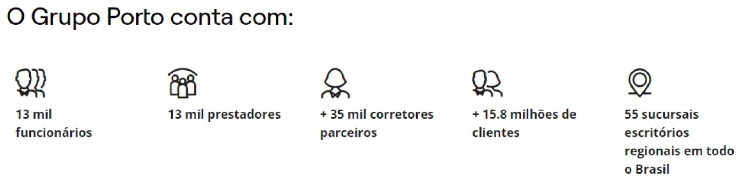

A Porto Seguro é uma das principais seguradoras do Brasil, com mais de 75 anos de história no mercado. Fundada em 1945, a empresa tem sua sede em São Paulo e oferece uma ampla gama de produtos e serviços nos setores de seguros, previdência, saúde, e serviços financeiros. Ao longo dos anos, a Porto Seguro se consolidou como uma referência em inovação e qualidade no mercado de seguros brasileiro. Ela é conhecida por sua forte presença em diferentes segmentos, incluindo automóveis, residências, vida, saúde, e também seguros empresariais.
Além dos serviços tradicionais de seguros, a Porto Seguro tem investido em tecnologia e soluções digitais para melhorar a experiência do cliente. Isso inclui aplicativos móveis para facilitar a contratação de seguros, serviços de assistência 24 horas, e programas de benefícios exclusivos para os segurados. A empresa também é reconhecida por suas iniciativas de responsabilidade social e sustentabilidade, envolvendo-se em projetos que visam o desenvolvimento das comunidades onde atua, a preservação do meio ambiente e a promoção da educação e cultura. Como parceira da Porto Seguro, sua empresa pode se beneficiar da reputação sólida e dos produtos e serviços de qualidade oferecidos pela seguradora, além de ter acesso a soluções personalizadas para atender às necessidades específicas dos clientes.
